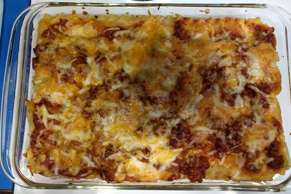

Lasagna!!!

A italian classic. The only think close to a tasty slice of lasagna is a warm plate of spagehtii and meatballs.
Try my twice baked,extra cheesy, scrumcious lasagna today!
- Bottomsless lasagna tray
- tomato sauce
- pasta sheets of the gods
- sacred twice baked ground beef
- Cheese of the forgoten goat
Steps
- grap a lasganga tray and enchant it so that it can be bottomless. I cant help you with this part
- Lay out the pasta sheets in your tray and add sacred ground beef,tomato sauce, and cheese of the forgotten goat
- bake it once at 400 degrees and then enchant it again and bake it 1000 degrees
- Add toppings and prepare any side dishes. enjoy your bottomless lasagna